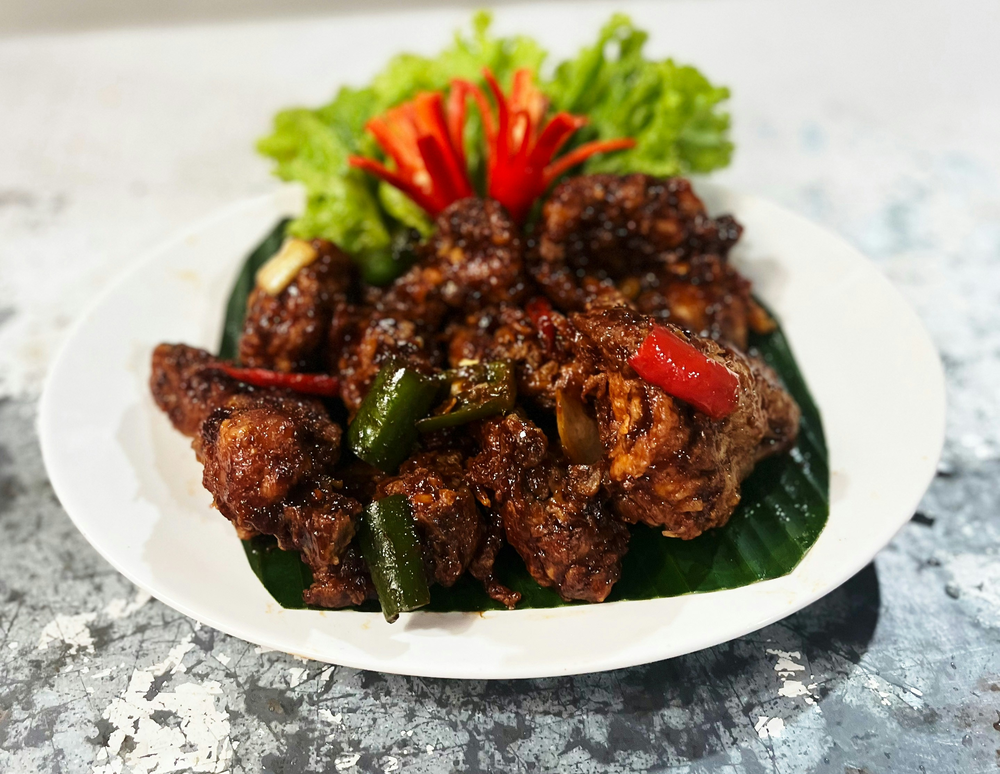

Rendang Recipes
Home

Beef Rendang
Beef rendang is a traditional Indonesian braised beef dish said to have been created by the Minangkabau people. Its deep, layered flavors and the slow cooking process make it truly something special, so it’s no surprise that it’s traditionally made for special occasions.
My version stays true to the spirit of authentic Indonesian beef rendang. I slow-cooked chuck steak to melt-in-your-mouth perfection in a thick, intensely flavorful sauce that coats every piece, locking in its naturally rich flavors. It’s the kind of dish that feels luxurious but is surprisingly doable at home if you give it the time it deserves.
Ingredients
- Coconut Flakes
- Coconut Milk
- Beef Chuck
- Aromatics: garlic, shallots, lemongrass, chilli
- Spices: cardamom pods, cinnamon stick, cloves, cumin seeds, coriander seeds, nutmeg, and star anise
- Herbs: bay leaves, lime leaves
- Palm Sugar
Instruction
- Make a paste: place all the aromatics ingredients in a small food processor and whizz until fine.
- Heat 1 tbsp oil in a large heavy based pot over high heat. Add half the beef and brown, then remove onto plate. Repeat with remaining beef.
- Lower heat to medium low. Add Spice Paste and cook for 2 – 3 minutes until the wetness has reduced and the spice paste darkens
- Add remaining Curry ingredients and beef. Stir to combine.
- Bring to simmer, then immediately turn down the heat to low or medium low so the sauce is bubbling very gently.
- Put the lid on the pot and leave it to simmer for 1 hr 15 minutes.
- Remove lid and check the beef to see how tender it is. You don’t want it to be “fall apart at a touch” at this stage, but it should be quite tender. If it is fall apart already, remove the beef from the pot before proceeding.
- Turn up heat to medium and reduce sauce for 30 – 40 minutes, stirring every now and then at first, then frequently towards the end until the beef browns and the sauce reduces to a paste that coats the beef.
- The beef should now be very tender, fall apart at a touch. If not, add a splash of water and keep cooking. Remove from heat.